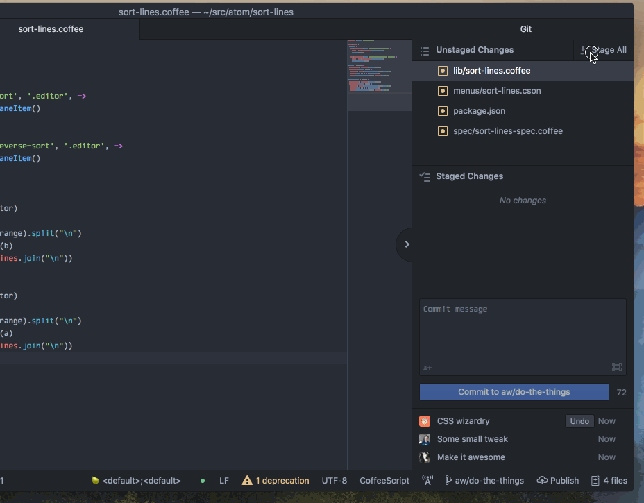

Atom 1.27

Atom 1.27 brings numerous improvements to your Git and GitHub workflows, including support for multiple co-authors, separate amend and undo, a quicker way to open a pull request on github.com, as well as pulling and pushing directly from the status bar. Update today for a richer GitHub experience, right inside your editor.
GitHub package improvements
Pair programming enthusiasts rejoice: the GitHub package now supports adding multiple co-authors to any commit. You can search by name or email to add previous committers as co-authors. If your co-author hasn’t committed to the current repository before, don’t worry - you can still give them the credit they deserve.
The Amend functionality, once a checkbox, has now been expanded to an Undo button and an action on the context menu of the recent commit list.

When it comes time to submit your work for review, you now have a quick way to create a pull request right from the GitHub pane, pushing any commits if necessary. With just a button click, Atom launches GitHub.com in your browser so that you can fill in the pull request description, assign reviewers, and then submit it.

We’ve streamlined the experience for pushing and pulling branches from the status bar. Now, the action it takes is based on the status of your branch relative to its remote. This should save you a few clicks per day on common remote interactions. You can still access explicit push/pull actions by right-clicking the status bar item.

Don’t forget to check out all the other improvements shipping with Atom 1.27 in the release notes! 
Atom 1.28 Beta

Improved Find-in-Project results view
Thanks to a pull request from @PoignardAzur, the Find-in-Project results view now groups adjacent matches in the same file and highlights multiple matches on the same line. This makes it much easier to understand the context around the matches:
Before

After

Electron upgrade
Under the hood, Atom 1.28 includes an upgrade from Electron 1.7.11 to 2.0.0, delivering a healthy batch of stability and performance improvements.
There are many more details in the release notes.
Get all these improvements today by joining the Atom Beta Channel!